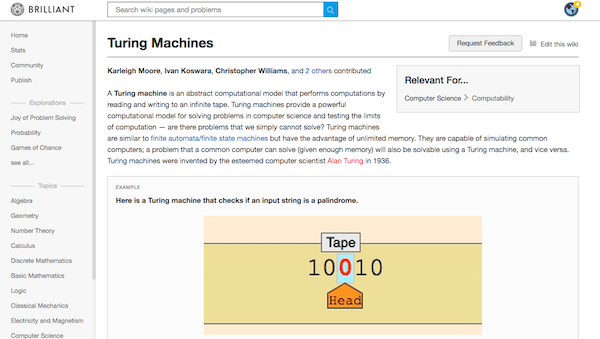

Brilliant.org
I was a math and science writing intern at Brilliant from March to August 2016. I wrote over 60 pages teaching STEM concepts to its 2 million+ users.
Most of the pages I wrote had to do with theoretical computer science such as Turing machines, Finite State Machines, Context-free grammars, Huffman coding, and algorithms/data structures such as sorting algorithms, heaps, and Rabin-Karp string search.